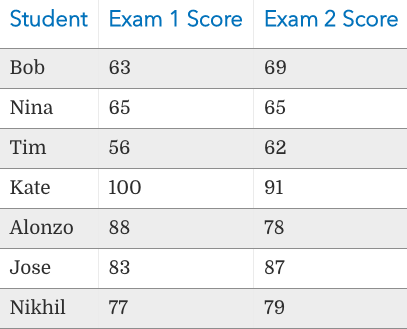
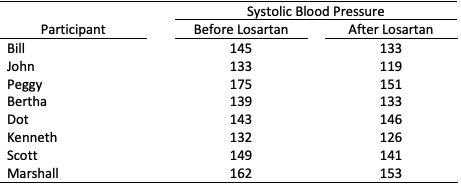
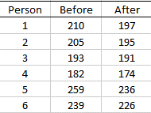
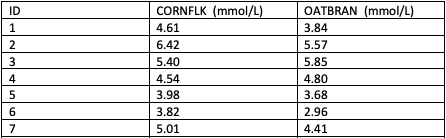

|
Please show your work before checking the answer and explanations or using StatsApps to generate full solutions.
Problem 1. A large software company gives job applicants a test of programming ability and the mean for that test has been 160 in the past. Twenty-five job applicants are randomly selected from a large university and they produce a mean score of 183 and standard deviation of 12. Use a 5% significance level to test whether the mean score for students from this university is greater than 160.
View Answer
Ans :
Explanation
H0: μ=160 Ha: μ160. α=0.05
Test statistic: t = 9.583. Critical value: t = 1.711. Reject the null hypothesis. At the 5% significance level, there is sufficient evidence to conclude that the mean score for students from this university is greater than 160
Problem 2. The mean waiting time for bus number 14 during peak hours used to be 10 minutes. A public bus company official claims that more buses are now in service and that the mean waiting time for bus number 14 during peak hours is now less than 10 minutes. Karen took bus number 14 during peak hours on 18 different occasions. Her mean waiting time was 7.6 minutes with a standard deviation of 2.3 minutes. At the 1% significance level, test the claim that the mean is less than 10 minutes.
View Answer
Ans :
Explanation:
H0: μ=10 minutes Ha μ<10 minutes. α=0.01
Test statistic: t = -4.43. Critical value: t = -2.567. Reject H0 At the 1% significance level, there is sufficient evidence to support the claim that the mean is less than 10 minutes.
Problem 3. A manufacturer makes ball bearings that are supposed to have a mean weight of 30 g. A retailer suspects that the mean weight is actually less than 30 g. The mean weight for a random sample of 16 ball bearings is 28.9 g with a standard deviation of 4.5 g. At the 5% significance level, test the claim that the mean is less than 30 g.BR>
View Answer
Ans :
Explanation:
H0: μ= 30 g. Ha: μ<30 g. α=0.05
Test statistic: t = -0.98. Critical value: t = -1.753. Do not reject H0. At the 5% significance level, there is not sufficient evidence to support the claim that the mean is less than 30 g.
Problem 4. A test of sobriety involves measuring the subject's motor skills. The mean score for men who are sober is known to be 35.0. A researcher would like to perform a hypothesis test to determine whether the mean score for sober women differs from 35.0. Twenty randomly selected sober women take the test and produce a mean score of 41.0 with a standard deviation of 3.7. Perform the hypothesis test at the 1% significance level.
View Answer
Ans :
Explanation:
H0: μ=35.0. Ha μ ≠35.0. α=0.01.
Test statistic: t = 7.252. Critical values: t = -2.861, 2.861. Reject the null hypothesis. At the 1 significance level, there is sufficient evidence to conclude that the mean score for sober women differs from 35.0, the mean score for men.
Problem 5. An instructor wants to use two exams in her classes next year. This year, she gives both exams to the students. She wants to know if the exams are equally difficult and wants to check this by looking at the differences between scores. If the mean difference between scores for students is “close enough” to zero, she will make a practical conclusion that the exams are equally difficult. Here is the data:

View Answer
Explanation:
Sample (differeces) information: mean = -0.14, variance =45.5, n = 7
H0: d = 0. Ha d ≠ 0. α=0.05 (default).
Test statistic: TS = -0.055. Critical values: t = -2.447, 2.447. Fail to reject the null hypothesis. At 5% significance level, there is NO sufficient evidence to conclude that the mean scores of the two exams are different.
Problem 6. Is there a difference in mean systolic blood pressure before and after taking 50mg of Losartan? Raw data for a sample of eight participants is provided below

View Answer
Explanation:
Sample (differeces) information: mean = 9.5, variance = 60, n = 8
H0: d = 0. Ha d ≠ 0. α=0.05 (default).
Test statistic: TS = 3.45. Critical values: t = -2.36, 2.36. Reject the null hypothesis. At 5% significance level, there is sufficient evidence to conclude that the mean systolic blood pressure appears to differ before and after taking Losartan.
Problem 7. A clinic provides a program to help their clients lose weight and asks a consumer agency to investigate the effectiveness of the program. The agency takes a sample of 6 people, weighing each person in the sample before the program begins and 3 months later to produce the table in the following. Determine whether the program is effective.

View Answer
Explanation:
Sample (differeces) information: mean = 11.5, variance = 48.2, n = 6
H0: d = 0. Ha d ≠ 0. α=0.05 (default).
Test statistic: TS = 4.06. Critical values: t = -2.571, 2.571. Reject the null hypothesis. At 5% significance level, there is sufficient evidence to conclude that the program is effective.
Problem 8. A cross-over trial investigated whether eating oat bran lowered serum cholesterol levels.
Seven (7) individuals were randomly assigned a diet that included either oat bran or corn
flakes. After two weeks on the initial diet, serum cholesterol were measured and the
participants were then “crossed-over” to the alternate diet. After two-weeks on the second diet,
cholesterol levels were once again recorded.

View Answer
Explanation:
Sample (differeces) information: mean = 0.381, variance = 0.293, n = 7
H0: d = 0. Ha d ≠ 0. α=0.05 (default).
Test statistic: TS = 1.86. Critical values: t = -2.447, 2.447. Fail to reject the null hypothesis. At 5% significance level, there is NO sufficient evidence to conclude that eating oat bran did not change the cholesterol level significantly.
|